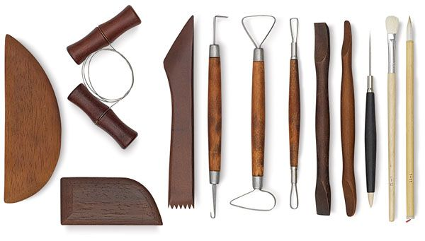
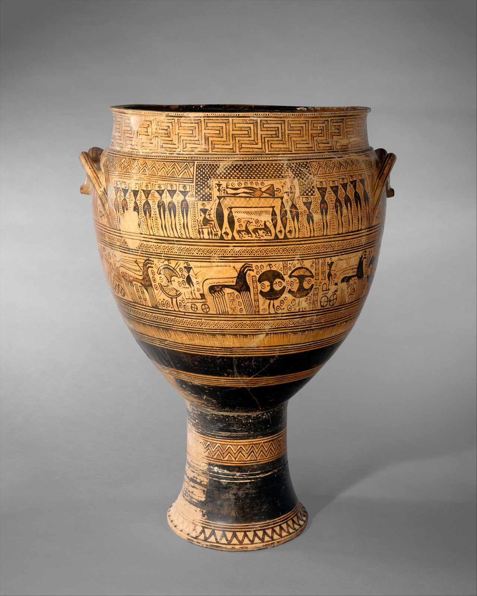
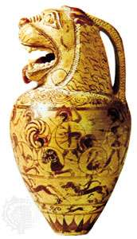
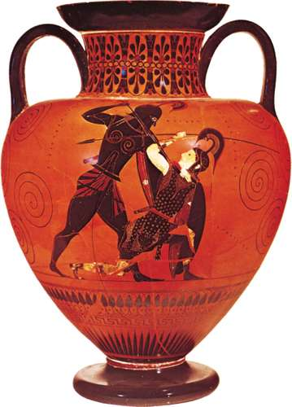

In this webpage, we will talk about the art of pottery. This page will inform you the basics of pottery and show examples of ancient pottery.
Pottery is works of art created using clay. Pottery can broadly be divided into earthware, porcelain, and stonewear.

take the tour (click_here)
geometric-style krater with funeral scenes from Attica, Greece, 18th century located: The Metropolitan Museum of Art,New York, Rogers Fund |
 |
proto-corinthian aryballos proto-corinthian aryballos with mouth in form o a lions head located: The British Museum, London |
 |
exekian Greek amphora depicting Achilles slaying Penthesila (queen of the Amazons) (530-525 BCE) located: The British Museum, London |
 |